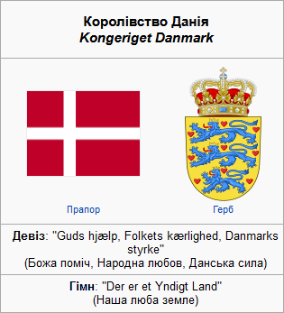

Королівство Данія Kongeriget Danmark
Данія
 Данія (дан. Danmark), офіційна назва — Королівство Данія (дан. Kongeriget Danmark); заст. Датчина — скандинавська країна у Північній Європі. Розташована на південний захід від Швеції і на південь від Норвегії, має сухопутний кордон із Німеччиною. Королівство Данія є суверенною державою, до складу якої входить дві автономні установчі землі в північній частині Атлантичного океану: Фарерські острови й найбільший у світі острів Гренландія. Данія займає територію площею 43 094 кв. км і має населення 5 792 202 осіб (2020). Країна складається з півострова Ютландія, архіпелагу і 443 островів, 70 з яких є населеними. Острови характеризуються плоскими орними землями і піщаними берегами, низькою висотою і помірним кліматом.
Об'єднане Королівство Данії утворилось у VIII столітті як мореплавна держава у боротьбі за контроль над Балтійським морем. Данське панування над Кальмарською унією, утвореною у 1397 році з Норвегією та Швецією, закінчилось відділенням Швеції у 1523 році. Сканія (нині південна Швеція) та острів Готланд ще залишалися у складі Данії відповідно до 1645 року (мир у Брьомсебро) та 1658 року (мир у Роскілле). Однак Данія залишила союз з Норвегією, який тривав до 1814 року. Данія успадкувала експансивну колоніальну імперію від союзу, завдяки чому має контроль над Фарерськими островами та Гренландією. Починаючи з XVII століття, відбувалось кілька цесій території; вони завершились у 1830-х сплеском націоналістичних рухів, які були придушені 1864 року під час другої війни за Шлезвіг. Данія дотримувалась нейтралітету у Першій світовій війні. У квітні 1940-го під час німецького вторгнення країна практично не чинила військового опору, у той час як данський рух опору був активний з 1943 року до капітуляції Німеччини у травні 1945 року. Бувши індустріалізованим експортером сільськогосподарської продукції у другій половині XIX століття, Данія здійснила низку соціальних і трудових реформ на початку XX століття, що заклало підґрунтя для нинішньої соціальної моделі з високорозвиненою та змішаною економікою.
Конституція Данії, прийнята 5 червня 1849 року, завершила еру абсолютної монархії, що почалась 1660 року, і встановила конституційну монархію, яка влаштована як парламентська демократія. Поточним монархом є королева Маргрете II. Уряд і національний парламент засідають у Копенгагені, який є столицею, найбільшим містом і торговим центром країни. Данія є членом Європейського Союзу з 1973 року, користуючись при тому низкою прав на неучасть; країна зберігає власну валюту — данську крону. Данія є однією із країн-засновників і членів НАТО, Північної ради, Ради Європи, Організації Економічного Співробітництва та Розвитку, Організації Об'єднаних Націй; країна також є частиною Шенгенської зони.
Данія посідає дуже високі місця у низці рейтингів, зокрема якості життя, здоров'я, освіти, захисту громадських прав та свобод, конкурентоспроможності, демократії, рівності, процвітання, людського розвитку. Данія часто оцінюється як одна з найщасливіших країн у світі в крос-національних дослідженнях рівня щастя. Країна посідає перше місце у світі в рейтингу соціальної мобільності, одну з провідних позицій у рейтингу країн з найкращими показниками рівності доходів, має один з найвищих у світі номінальний ВВП на особу населення і один з найвищих у світі податків на індивідуальний дохід. Більшість данців є членами народної церкви, хоча конституція гарантує свободу віросповідання.
Існує дві версії походження назви країни. За однією версією вважають, що сама назва утворилась від племені данів, які проживали на півдні Скандинавського півострова і в V—VII століттях нашої ери заселили Данський архіпелаг і Ютландію. За іншою версією, «Денмарк» перекладається як «лісова країна», оскільки слово «дан» (або «тан») на староскандинавській мові означало «ліс».